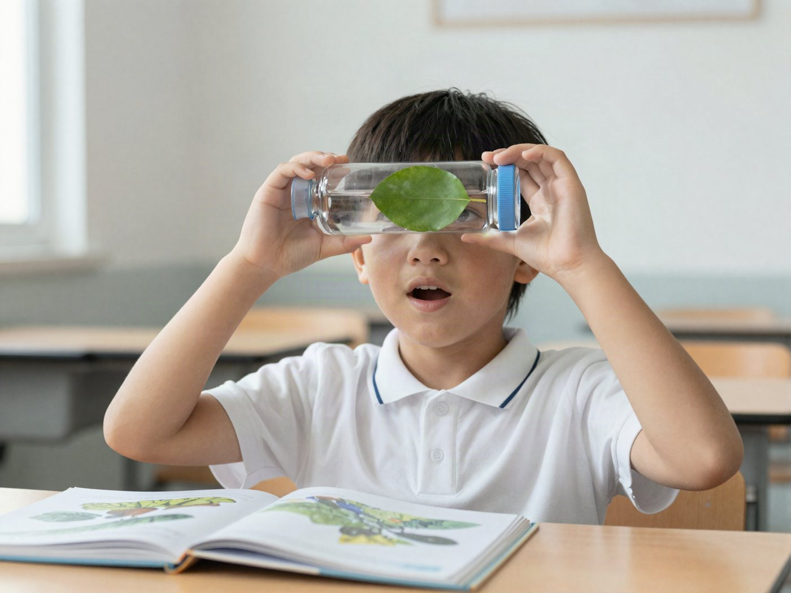

전체 단원 › 실험·활동 › 5학년 1학기 과학
페트병 물 돋보기

물이 담긴 페트병과 물방울 하나로 작은 글씨를 크게 보는 돋보기를 만들어요.
15분 · 난이도 ★☆☆ 쉬움
준비물
- 투명 페트병 1개 — 무늬 없이 매끈한 둥근 병. 라벨은 떼요.
- 물 — 수돗물
- 비닐 랩 — 주방용 랩
- 숟가락 — 물방울을 떨어뜨리는 용도 (스포이트도 OK)
- 신문이나 책 — 글씨가 작은 것
만드는 방법
- 물병 돋보기 만들기
페트병에 물을 가득 채우고 뚜껑을 꼭 닫아요. 공기 방울이 적을수록 또렷하게 보여요. - 글씨 위에서 보기
병을 눕혀 신문 위에 올리고 글씨를 봐요. 병을 조금씩 들어 올리며 글씨가 어떻게 바뀌는지 살펴봐요. 위아래로는 그대로인데 옆으로만 넓어지는 것도 찾아봐요. - 물방울 돋보기 만들기
신문 위에 랩을 펴고, 숟가락으로 물을 한 방울 떨어뜨려요. 물방울 아래 글씨를 들여다봐요. - 물방울 크기 바꾸기
작은 물방울과 큰 물방울 중 어느 쪽이 글씨를 더 크게 보여 주는지 비교해요. - 주변 관찰하기
물병 돋보기로 나뭇잎 잎맥, 손가락 지문, 그림책을 살펴봐요. 맨 위 사진처럼요!
관찰해 봐요
- 물병 돋보기는 왜 옆으로만 커 보일까요?
- 물방울 돋보기는 왜 모든 방향으로 커 보일까요?
- 물을 비운 빈 병으로 보면 어떻게 될까요?
왜 그럴까?
물이 둥글게 볼록한 모양이 되면 빛이 그 안을 지나면서 살짝 꺾여요. 꺾인 빛이 우리 눈에 들어오면 물건이 실제보다 크게 보여요. 진짜 돋보기도 가운데가 볼록한 유리로 만들어요.
학교 교육과정 연결
- [6과02-02] 빛이 나아가는 현상을 관찰하여 빛이 직진, 반사, 굴절하는 성질이 있음을 말할 수 있다.
- [6과02-03] 거울과 렌즈의 쓰임새를 조사하고 거울이나 렌즈를 이용한 장치를 창의적으로 만들 수 있다.